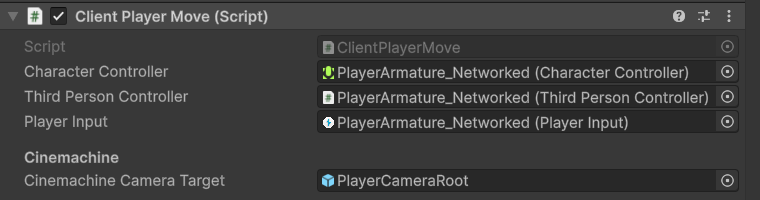

Exercise 3: Adding Network Behaviour
Adding ClientPlayerMode
To manage the MonoBehaviours on the PlayerArmature_Networked, we can use a NetworkBehaviour.
We can implement a NetworkBehaviour called ClientPlayerMove to manage the player movement. This can make sure that input from the host and the client only works on their respective player objects. Here’s the example setup:
using Unity.Netcode;
using StarterAssets;
using UnityEngine;
using UnityEngine.InputSystem;
namespace NetcodeDemo
{
public class ClientPlayerMove: NetworkBehaviour
{
[SerializeField]
CharacterController m_CharacterController;
[SerializeField]
ThirdPersonController m_ThirdPersonController;
[SerializeField]
PlayerInput m_PlayerInput;
[Header("Cinemachine")]
[Tooltip("The follow target set in the Cinemachine Virtual Camera that the camera will follow")]
public GameObject CinemachineCameraTarget;
private void Awake()
{
m_PlayerInput.enabled = false;
m_ThirdPersonController.enabled = false;
m_CharacterController.enabled = false;
}
public override void OnNetworkSpawn()
{
base.OnNetworkSpawn();
enabled = IsClient; // Enable if this is a client.
if (!IsOwner)
{
// Disable if this is not the owner
enabled = false;
m_PlayerInput.enabled = false;
m_CharacterController.enabled = false;
m_ThirdPersonController.enabled = false;
return;
}
GameObject virtualCameraObject = GameObject.Find("PlayerFollowCamera");
if(virtualCameraObject != null)
{
var vCam3 = virtualCameraObject.GetComponent();
if (vCam3 != null) vCam3.Follow = CinemachineCameraTarget.transform;
}
// Enable if this is an owner
m_PlayerInput.enabled = true;
m_CharacterController.enabled = true;
m_ThirdPersonController.enabled = true;
}
}
}
Add this to the PlayerArmature_Networked prefab. Then fill out the appropriate fields in the Inspector.

Once this script is applied to the prefab, connect the host and client sessions. When clients connect to the NetworkManager, certain components of the player object are disabled by default due to the IsOwner property, which checks if the local player is the owner of the instance.
In the Hierarchy, toggle the selection between the two instances of PlayerArmature_ Networked.
Note how several components (like the PlayerInput) now appear deactivated on player instances not owned by the respective client. For the host, this setup allows control over one of the player instances, and for the client, control over the other.
However, though we can control different player instances, their movements are not synchronized across the network. To make the movement match from host to client, we’ll need to add additional network components like NetworkTransform.
Adding NetworkTransform and NetworkAnimator
Add a NetworkTransform component to the PlayerArmature_Networked prefab. Uncheck any axes which won’t affect gameplay; in this case, uncheck all scales, as well as x rotation and z rotation axes. Because synchronization uses bandwidth, it’s essential to minimize syncing any superfluous data.
Next add the NetworkAnimator component to the PlayerAramature_Networked. Drag the existing Animator component into the empty field.
Finally change the Authority Mode to Owner, so the client (the owner) has permission to send updates to the server. You need to change it both on the NetworkTransform and NetworkAnimator.
The client window represents a second machine that is connected to the host. Ideally, any actions performed on the host are reflected on the client and vice versa.
The NetworkTransform allows you to sync the position, rotation, and scale of a Transform, while the NetworkAnimator syncs the animation states. Now when your host player runs around the playground environment, its movements transfer to the client in Multiplayer Play Mode.
In Multiplayer Play Mode, you can now move the player from the client and its position and animation states should sync properly to the host.
Probably you'll have a NullReference exeption on line 379 and 388 on ThirdPersonController script, that is because when the other player moves or jumps, OnFootStep and OnLand are called also (and that's perfect because we want to hear the steps of the other player). In orther to keep this working and also remove the error, change those functions for these ones:
private void OnFootstep(AnimationEvent animationEvent)
{
if (animationEvent.animatorClipInfo.weight > 0.5f)
{
if (FootstepAudioClips.Length > 0)
{
var index = Random.Range(0, FootstepAudioClips.Length);
AudioSource.PlayClipAtPoint(FootstepAudioClips[index], transform.position, FootstepAudioVolume);
}
}
}
private void OnLand(AnimationEvent animationEvent)
{
if (animationEvent.animatorClipInfo.weight > 0.5f)
{
AudioSource.PlayClipAtPoint(LandingAudioClip, transform.position, FootstepAudioVolume);
}
}